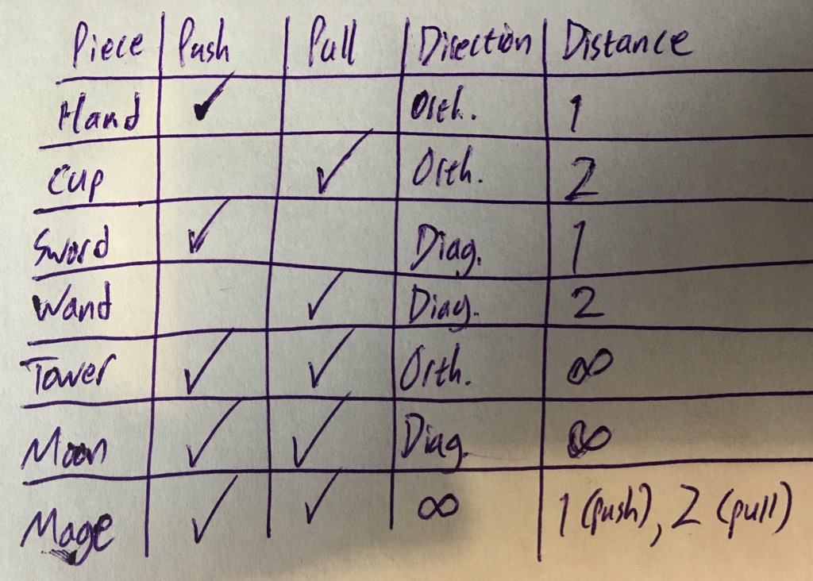

Invented by Chris St. Clair
This file will soon contain the rules for Archmage. Until then, here are images of the pieces and how they move.
Archmage is played on a seven-by-seven square board with a whole in the center square.
